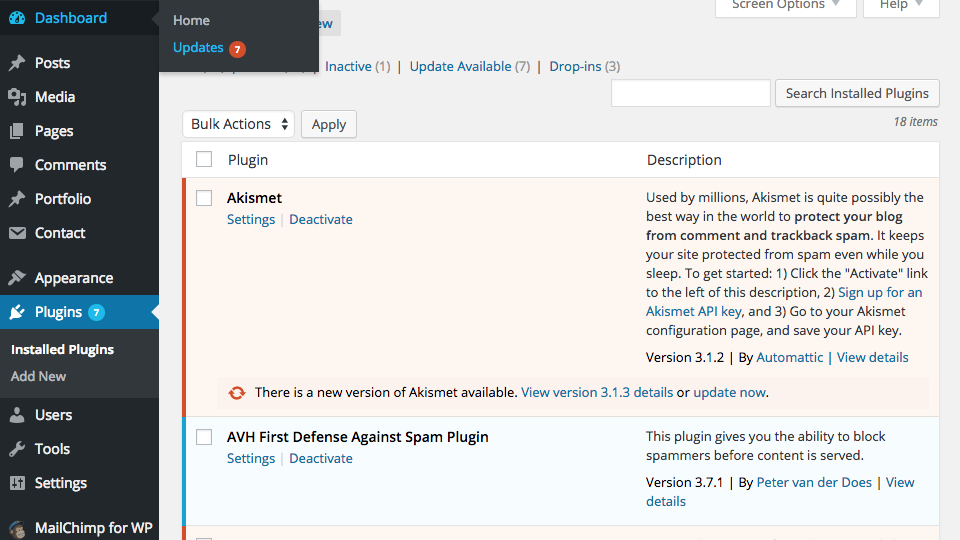

How to maintain your WordPress website
Boom! Now you have an awesome WordPress website. Now what?
If you're new to WordPress or you've never maintained a WordPress site before, then this post is for you.
Things change! Even if you don't make any changes to your website, the authors of WordPress and the authors of your plugins and maybe even the authors of your theme and making updates, fixing bugs, and patching security holes. It's important to update your website as good protocol.
Backups
Before all else, backup your website! If you've never backed up your website, now is a good time to get started. A full site backup means having a backup of your theme, plugins, database, uploads, and any other files.
My go-to plugin for backups is Updraft Plus Backup and Restoration. You can connect your Dropbox or other cloud storage account to have your backups saved to a safe place. Not only can you take a full site backup which you can restore if something should go wrong… but you can easily set up a schedule to automatically run backups.
It's good to keep at least one archival backup of your full website some place safe. If you're constantly blogging, you should probably backup your database everyday. Depending on the site I'll keep several versions going back.
Running updates
It's important to keep your WordPress website up to date. WordPress makes it easy by providing a notification when updates are available. You'll find the number of updates available underneath "Home" in the main menu of the dashboard.

Making updates is usually as easy as selecting which plugins and themes you want to update and clicking "Update." However, I'm always careful about updating. Usually there's no problems, but sometimes, it can happen. Backing up your website before running updates is a good idea. I generally move through updates section by section, plugins, theme files, and finally core WordPress updates.
Plugins
Updating plugins is usually painless. It can be a good idea to turn off caching while making updates. This avoids caching maintainence pages or possibly causing other complications. When you're done you can turn your cache back on.
Themes
Be careful when updating your theme if you have a customized theme. Even when customizations are properly configured with a child theme, theme authors can introduce new elements which cause breaking changes. Also theme updates can come with new functionality and styles by default, so its a good idea to review the changelog and see what you'll be getting.
Core WordPress Updates
Before updating the core WordPress files, WordPress recommends that you backup your website. You'll also want to make sure your cache is off.
Check your site
There's nothing like human-eyes-on-your-site. Take a look at your homepage. If you've updated a plugin connected with another page, check it out, make sure everything works.
Wrapping Up
Making updates shouldn't be stressful and it shouldn't take too long. However, it is something to turn into a routine habit. If you've been taking regular backups then you can live that stress-free life.